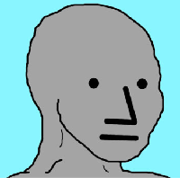

NPC (meme)
For the concept the meme is based on, see Non-player character.
NPC (/ɛnpisi/; each letter separately), derived from non-player character, is an internet meme that represents people who do not think for themselves or do not make their own decisions; it is also known as NPC Wojak.[2][3][1][4][5] The NPC meme, which graphically is based on the Wojak meme, was created in July 2016 by an anonymous author and first published on the imageboard 4chan, where the idea and inspiration behind the meme were introduced.[6]
The NPC meme gained widespread attention and in October 2018 was covered in numerous news outlets, including The New York Times ,[4] The Verge,[1] BBC,[7] and Breitbart News.
NPC

The NPC
First appearance July 7, 2016
Created by Anonymous
Based on Wojak
In-universe information
Gender Male
History
The concept of the NPC first appeared on 4chan on July 7, 2016.[6] The post by an anonymous user who initiated the NPC meme, titled "Are you an NPC?", detailed the behavior of individuals acting similarly to non-player characters in video games by repeatedly using phrases such as "JUST BE YOURSELF",[8] and ended the post with the following description of people the NPC meme intends to depict.[6]
If you get in a discussion with them it's always the same buzzwords and hackneyed arguments. They're the kind of people who make a show of discomfort when you break the status quo like by breaking the normie barrier to invoke a real discussion. it's like in a [video game] when you accidentally talk to somebody twice and they give you the exact lines word for word once more. — Anonymous, "Are you an NPC?", 4chan (July 7, 2016)[6][8][a]
The design of the NPC meme character is based on Wojak (Polish: Wojak, lit. 'warrior, soldier', [vɔjak]),[6] a meme created in Microsoft Paint in 2010.[9] Unlike the NPC meme, the Wojak meme (also known as Feels Guy[7]) appeared first on the image hosting website vichan and has mainly been used for expression of feelings, most often melancholy or regret.[9]
During the weeks leading up to the 2018 midterm elections in the United States, the NPC meme gained remarkable attention, with relatively high media coverage, publication of new NPC memes online, and several noticeable events. A large number of animated videos based on the NPC meme were uploaded to YouTube in the second half of October 2018,[10] and Google searches for the term "NPC Wojak" peaked around the same time.[6] In October 2018, a large number of Twitter accounts were created which presented themselves as NPCs, and more than 1,500 such accounts were subsequently banned by Twitter.[7] In November, InfoWars held a competition promoting creation of NPC memes. The winning entry, by a Twitter user named "Carpe Donktum", was later retweeted by then-U.S. President Donald Trump on February 2019 before it was removed for copyright infringement.[11][12] The re-election campaign for then-Iowa Representative Steve King also tweeted an NPC meme around the same time, aimed at the sitting Democratic members of Congress.[13]
The number of searches for the search term "NPC Wojak" remained relatively constant during 2019, though at a level significantly lower than its peak from early October through mid November 2018.[6]
Although the NPC meme was created 6 years after the Wojak meme, the NPC meme rapidly gained attention in comparison with the Wojak meme. On the website of the meme community Know Your Meme, the NPC meme has 858,000 page views, 33 videos, 597 images and 749 comments as of December 31, 2019.[6] This can be compared to the Wojak meme on which NPC is based, which has 787,000 page views, 6 videos, 332 images and 47 comments as of December 31, 2019.[9] A Subreddit exclusively for "right wing, political" NPC memes without "extremist content" called r/NPCMemes was created on October 10, 2018.[14]
In 2022, a variation of the NPC meme called "I Support The Current Thing" was popularized. The meme is mainly used by the political right to mock liberals for "perceived conformism, frivolousness, and distractibility" who "blindly flit from news story to news story, issue to issue, changing their Facebook profile pics and Twitter display names to 'support' whatever 'Current Thing' dominates news and commentary. The current thing has been Ukraine, essential workers, the Women's March, Notre Dame after it caught on fire, etc." In March 2022, Elon Musk tweeted a version of the meme.[15]
Characteristics
In appearance, the NPC character is gray in color,[17] simple in its design,[5] with an expressionless face,[2][18] a triangular nose[4] and a blank stare.[6] The shape of the NPC face resembles that of Wojak, and is drawn crudely.[4]
The initial NPC refers to non-player character, a term used in video-games for characters the player cannot control.[19][18] As such, a non-player character in a game is controlled by the computer, and typically interacts with the player through simple and repetitive actions, such as communicating the same sentence each time the player approaches the NPC. As such, NPCs have "no internality, agency, or capacity for critical thought",[8] they rely on scripted lines[4][20] and do not think by themselves.[2] Following the analogy of non-player characters, the NPC meme is used to mock individuals the maker perceives as lacking those attributes, generally political opponents. The NPC responds using simple dialogue resembling video game NPCs, with no capability for discussion.[6] Due to NPC memes' greater popularity among the political right, the NPC is generally portrayed as parroting left-wing positions.[8] Despite being co-opted[18] by right-wing movements to "mock leftists," both left- and right-wing NPC variants exist.[5][1] •⎳• is a emoticon version of the NPC meme.
Media coverage
The NPC meme has been featured in major and minor news outlets alike, with frequent coverage during the peak of the NPCs popularity in fall 2018. According to The Verge, a few articles (including one by The New York Times published on October 16, 2018) sparked a "domino effect" and led to increased spread of the meme on Twitter, YouTube and through articles.[1]
See also
- List of Internet phenomena
- Philosophical zombie – a philosophical thought experiment that imagines a being which appears to display consciousness but is actually not conscious.
- Solipsism - The philosophical idea that only one's mind is sure to exist.